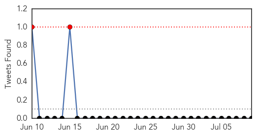

Influenza
30-Day Web Trend
1 alerts, 0 warnings

30-Day Twitter Trend
0 alerts, 0 warnings

Article Locations

Article Confidences

Top Articles:
- 0.973
- www.cowracommunitynews.com
- 0.949
- Discovery points to a new path toward a universal flu vaccine
- 0.751
- July 8, 2015 Archives
- 0.751
- July 8, 2015 Archives
- 0.751
- July 8, 2015 Archives
- 0.751
- July 8, 2015 Archives
- 0.751
- July 8, 2015 Archives
- 0.726
- US Senate Meeting Highlights Dramatic Impact of Avian Flu
- 0.706
- USDA grapples with 'largest animal health emergency'
- 0.648
- Avian Flu Impacting U.S. Poultry Industry
- 0.605
- Dire bird flu talk at Carper hearing
Top Tweets:
-
No tweets found for Jul 09, 2015
West Nile Virus
30-Day Web Trend
4 alerts, 0 warnings

30-Day Twitter Trend
4 alerts, 0 warnings

Article Locations
Article Confidences
Top Articles:
- 0.991
- Benton County woman is first person infected with West Nile in state
- 0.983
- 1st human case of West Nile reported in Arizona this year
- 0.979
- West Nile virus activity increasing locally, statewide
- 0.960
- Mosquitoes in Kane Co. Test Positive for West Nile Virus
- 0.953
- Vaccine against West Nile virus to be tested in people, health officials say
- 0.942
- Longmont To Activate Mosquito Spraying Crews « CBS Denver
- 0.941
- No human case of West Nile in California this year, but it's imminent, official warns
- 0.937
- NIH-funded vaccine for West Nile virus enters human clinical trials
- 0.921
- West Nile virus is confirmed in Oklahoma County resident
- 0.907
- Health Department Warns of Increased West Nile Virus...
- 0.831
- West Nile Virus on the rise
- 0.785
- Mosquito traps in Weld County test positive for West Nile virus
- 0.778
- SD County: More Birds Infected With West Nile This Year
- 0.759
- Oklahoma County Health Department Confirms Human Case Of West Ni
Top Tweets:
-
No tweets found for Jul 09, 2015